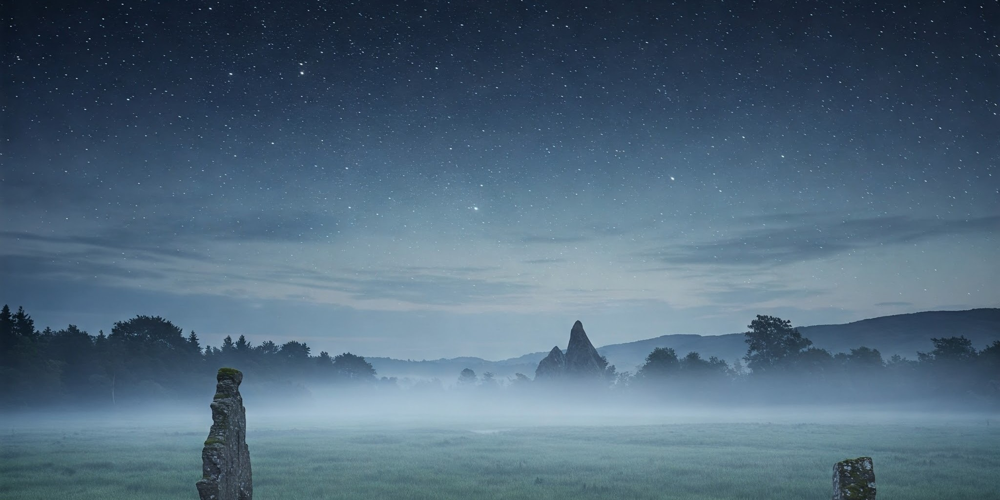

PROGRAM
上映作品

Program1
南極：
"Polar Silence － 白き星の眠る場所 －"
人類がほとんど立ち入らない“静寂の大地”南極。
夜が数ヶ月続く極夜の空にだけ現れる、幻のような星たちとオーロラ。
無音の大地に響く、氷の軋む音と星の瞬き。
サウンドは極限までミニマルに、静寂と宇宙の音で構成します。

Program2
ニュージーランド：
"Te Rangi － マオリの星空と大地のうた －"
マオリ語で「空」を意味する “Te Rangi（テ・ランギ）”。
ニュージーランドの星空には、先住民マオリの神話が息づいています。
南半球ならではの星座と、満天の星が映す時間のはじまり。
マオリの星の名前「マタリキ（プレアデス）」など、文化と共に感じる宇宙の神聖さを体験いただけます。

Program3
アイルランド：
"Emerald Sky － 緑と霧の向こうの星空 －"
“エメラルドの島”と呼ばれるアイルランド。
しっとりとした草原、霧に包まれた湖、ケルトの遺跡…。
夜になると静かに現れる星々と、ケルト音楽の旋律が重なり合い、自然と精霊の気配を感じる、神秘的な夜へと誘います。

Program4
アフリカ：
"Savanna Tales － 星と大地の記憶 －"
地平線まで広がるサバンナの夜空。焚き火を囲んで語られてきた、星と動物たちの物語に耳を傾けながら、ライオン座や南十字星が輝く大地を旅します。
生命の鼓動とともに刻まれた、アフリカの星空の魅力をお楽しみいただけます。